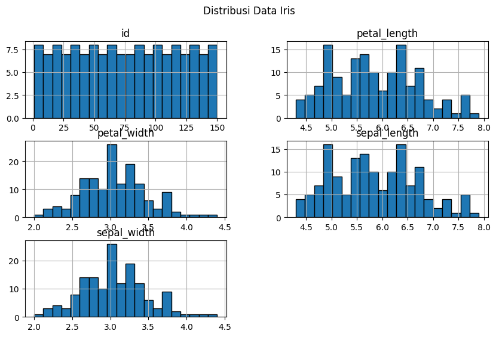
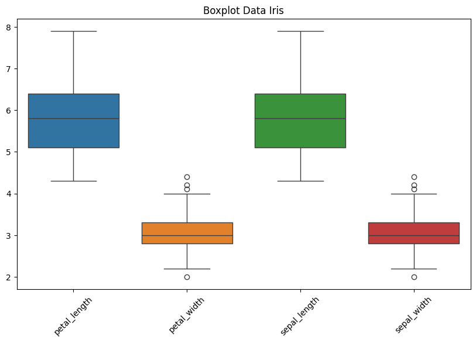
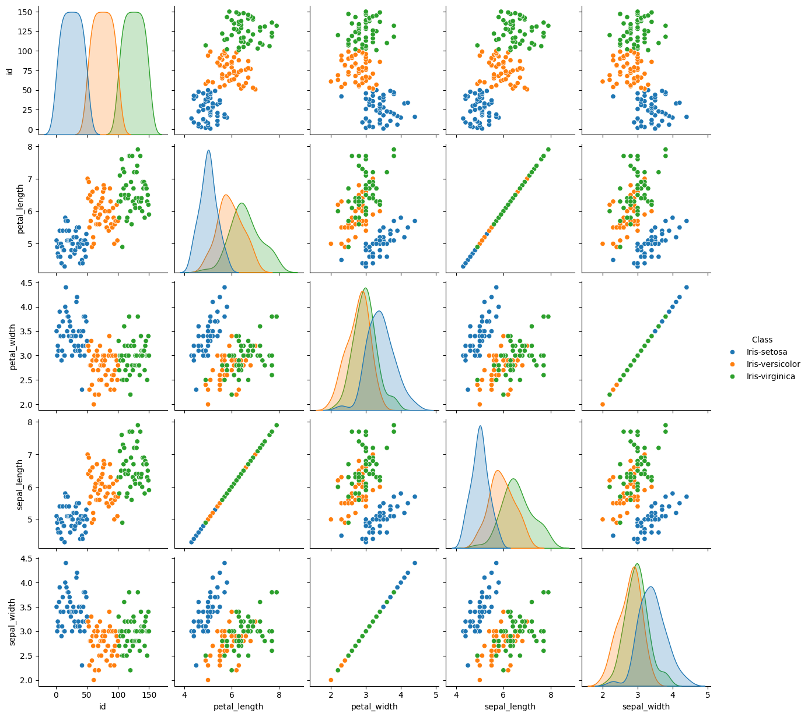
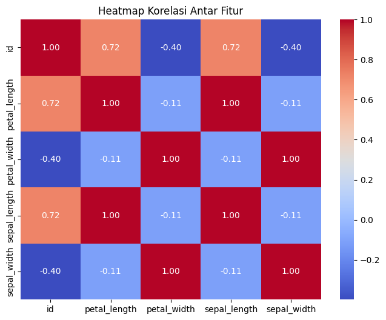

!pip install mysql-connector-python psycopg2 pandas sqlalchemy
^C
Collecting mysql-connector-python
Using cached mysql_connector_python-9.2.0-cp313-cp313-win_amd64.whl.metadata (6.2 kB)
Requirement already satisfied: psycopg2 in c:\users\lenovo\appdata\local\programs\python\python313\lib\site-packages (2.9.10)
Collecting pandas
Using cached pandas-2.2.3-cp313-cp313-win_amd64.whl.metadata (19 kB)
Requirement already satisfied: sqlalchemy in c:\users\lenovo\appdata\local\programs\python\python313\lib\site-packages (2.0.38)
Requirement already satisfied: numpy>=1.26.0 in c:\users\lenovo\appdata\local\programs\python\python313\lib\site-packages (from pandas) (2.2.3)
Requirement already satisfied: python-dateutil>=2.8.2 in c:\users\lenovo\appdata\local\programs\python\python313\lib\site-packages (from pandas) (2.9.0.post0)
Collecting pytz>=2020.1 (from pandas)
Using cached pytz-2025.1-py2.py3-none-any.whl.metadata (22 kB)
Collecting tzdata>=2022.7 (from pandas)
Using cached tzdata-2025.1-py2.py3-none-any.whl.metadata (1.4 kB)
Requirement already satisfied: greenlet!=0.4.17 in c:\users\lenovo\appdata\local\programs\python\python313\lib\site-packages (from sqlalchemy) (3.1.1)
Requirement already satisfied: typing-extensions>=4.6.0 in c:\users\lenovo\appdata\roaming\python\python313\site-packages (from sqlalchemy) (4.12.2)
Requirement already satisfied: six>=1.5 in c:\users\lenovo\appdata\local\programs\python\python313\lib\site-packages (from python-dateutil>=2.8.2->pandas) (1.17.0)
Using cached mysql_connector_python-9.2.0-cp313-cp313-win_amd64.whl (16.1 MB)
Downloading pandas-2.2.3-cp313-cp313-win_amd64.whl (11.5 MB)
---------------------------------------- 0.0/11.5 MB ? eta -:--:--
-- ------------------------------------- 0.8/11.5 MB 4.9 MB/s eta 0:00:03
-- ------------------------------------- 0.8/11.5 MB 4.9 MB/s eta 0:00:03
-- ------------------------------------- 0.8/11.5 MB 4.9 MB/s eta 0:00:03
-- ------------------------------------- 0.8/11.5 MB 4.9 MB/s eta 0:00:03
-- ------------------------------------- 0.8/11.5 MB 4.9 MB/s eta 0:00:03
-- ------------------------------------- 0.8/11.5 MB 4.9 MB/s eta 0:00:03
-- ------------------------------------- 0.8/11.5 MB 4.9 MB/s eta 0:00:03
-- ------------------------------------- 0.8/11.5 MB 4.9 MB/s eta 0:00:03
-- ------------------------------------- 0.8/11.5 MB 4.9 MB/s eta 0:00:03
-- ------------------------------------- 0.8/11.5 MB 4.9 MB/s eta 0:00:03
-- ------------------------------------- 0.8/11.5 MB 4.9 MB/s eta 0:00:03
-- ------------------------------------- 0.8/11.5 MB 4.9 MB/s eta 0:00:03
-- ------------------------------------- 0.8/11.5 MB 4.9 MB/s eta 0:00:03
-- ------------------------------------- 0.8/11.5 MB 4.9 MB/s eta 0:00:03
-- ------------------------------------- 0.8/11.5 MB 4.9 MB/s eta 0:00:03
-- ------------------------------------- 0.8/11.5 MB 4.9 MB/s eta 0:00:03
-- ------------------------------------- 0.8/11.5 MB 4.9 MB/s eta 0:00:03
-- ------------------------------------- 0.8/11.5 MB 4.9 MB/s eta 0:00:03
-- ------------------------------------- 0.8/11.5 MB 4.9 MB/s eta 0:00:03
-- ------------------------------------- 0.8/11.5 MB 4.9 MB/s eta 0:00:03
-- ------------------------------------- 0.8/11.5 MB 4.9 MB/s eta 0:00:03
--- ------------------------------------ 1.0/11.5 MB 175.5 kB/s eta 0:01:00
--- ------------------------------------ 1.0/11.5 MB 175.5 kB/s eta 0:01:00
---- ----------------------------------- 1.3/11.5 MB 215.0 kB/s eta 0:00:48
----- ---------------------------------- 1.6/11.5 MB 257.6 kB/s eta 0:00:39
------ --------------------------------- 1.8/11.5 MB 298.3 kB/s eta 0:00:33
-------- ------------------------------- 2.4/11.5 MB 380.9 kB/s eta 0:00:24
---------- ----------------------------- 2.9/11.5 MB 454.0 kB/s eta 0:00:19
---------- ----------------------------- 2.9/11.5 MB 454.0 kB/s eta 0:00:19
---------- ----------------------------- 3.1/11.5 MB 467.5 kB/s eta 0:00:18
---------- ----------------------------- 3.1/11.5 MB 467.5 kB/s eta 0:00:18
---------- ----------------------------- 3.1/11.5 MB 467.5 kB/s eta 0:00:18
----------- ---------------------------- 3.4/11.5 MB 459.5 kB/s eta 0:00:18
----------- ---------------------------- 3.4/11.5 MB 459.5 kB/s eta 0:00:18
----------- ---------------------------- 3.4/11.5 MB 459.5 kB/s eta 0:00:18
------------ --------------------------- 3.7/11.5 MB 457.9 kB/s eta 0:00:18
------------ --------------------------- 3.7/11.5 MB 457.9 kB/s eta 0:00:18
------------- -------------------------- 3.9/11.5 MB 465.4 kB/s eta 0:00:17
------------- -------------------------- 3.9/11.5 MB 465.4 kB/s eta 0:00:17
-------------- ------------------------- 4.2/11.5 MB 475.7 kB/s eta 0:00:16
-------------- ------------------------- 4.2/11.5 MB 475.7 kB/s eta 0:00:16
--------------- ------------------------ 4.5/11.5 MB 491.4 kB/s eta 0:00:15
----------------- ---------------------- 5.0/11.5 MB 528.7 kB/s eta 0:00:13
----------------- ---------------------- 5.0/11.5 MB 528.7 kB/s eta 0:00:13
------------------ --------------------- 5.2/11.5 MB 543.7 kB/s eta 0:00:12
------------------- -------------------- 5.5/11.5 MB 555.5 kB/s eta 0:00:11
-------------------- ------------------- 5.8/11.5 MB 566.1 kB/s eta 0:00:11
-------------------- ------------------- 5.8/11.5 MB 566.1 kB/s eta 0:00:11
--------------------- ------------------ 6.0/11.5 MB 569.2 kB/s eta 0:00:10
--------------------- ------------------ 6.0/11.5 MB 569.2 kB/s eta 0:00:10
--------------------- ------------------ 6.0/11.5 MB 569.2 kB/s eta 0:00:10
--------------------- ------------------ 6.0/11.5 MB 569.2 kB/s eta 0:00:10
--------------------- ------------------ 6.0/11.5 MB 569.2 kB/s eta 0:00:10
--------------------- ------------------ 6.0/11.5 MB 569.2 kB/s eta 0:00:10
--------------------- ------------------ 6.0/11.5 MB 569.2 kB/s eta 0:00:10
--------------------- ------------------ 6.0/11.5 MB 569.2 kB/s eta 0:00:10
--------------------- ------------------ 6.0/11.5 MB 569.2 kB/s eta 0:00:10
--------------------- ------------------ 6.3/11.5 MB 501.4 kB/s eta 0:00:11
--------------------- ------------------ 6.3/11.5 MB 501.4 kB/s eta 0:00:11
---------------------- ----------------- 6.6/11.5 MB 506.6 kB/s eta 0:00:10
----------------------- ---------------- 6.8/11.5 MB 516.8 kB/s eta 0:00:10
------------------------ --------------- 7.1/11.5 MB 527.4 kB/s eta 0:00:09
------------------------ --------------- 7.1/11.5 MB 527.4 kB/s eta 0:00:09
------------------------ --------------- 7.1/11.5 MB 527.4 kB/s eta 0:00:09
------------------------ --------------- 7.1/11.5 MB 527.4 kB/s eta 0:00:09
------------------------ --------------- 7.1/11.5 MB 527.4 kB/s eta 0:00:09
------------------------ --------------- 7.1/11.5 MB 527.4 kB/s eta 0:00:09
------------------------ --------------- 7.1/11.5 MB 527.4 kB/s eta 0:00:09
------------------------- -------------- 7.3/11.5 MB 497.4 kB/s eta 0:00:09
------------------------- -------------- 7.3/11.5 MB 497.4 kB/s eta 0:00:09
-------------------------- ------------- 7.6/11.5 MB 499.8 kB/s eta 0:00:08
--------------------------- ------------ 7.9/11.5 MB 509.5 kB/s eta 0:00:08
----------------------------- ---------- 8.4/11.5 MB 533.4 kB/s eta 0:00:06
------------------------------ --------- 8.7/11.5 MB 543.5 kB/s eta 0:00:06
------------------------------ --------- 8.7/11.5 MB 543.5 kB/s eta 0:00:06
------------------------------- -------- 8.9/11.5 MB 547.6 kB/s eta 0:00:05
------------------------------- -------- 8.9/11.5 MB 547.6 kB/s eta 0:00:05
------------------------------- -------- 8.9/11.5 MB 547.6 kB/s eta 0:00:05
------------------------------- -------- 8.9/11.5 MB 547.6 kB/s eta 0:00:05
------------------------------- -------- 8.9/11.5 MB 547.6 kB/s eta 0:00:05
------------------------------- -------- 8.9/11.5 MB 547.6 kB/s eta 0:00:05
------------------------------- -------- 8.9/11.5 MB 547.6 kB/s eta 0:00:05
------------------------------- -------- 9.2/11.5 MB 515.5 kB/s eta 0:00:05
------------------------------- -------- 9.2/11.5 MB 515.5 kB/s eta 0:00:05
--------------------------------- ------ 9.7/11.5 MB 531.6 kB/s eta 0:00:04
---------------------------------- ----- 10.0/11.5 MB 539.6 kB/s eta 0:00:03
---------------------------------- ----- 10.0/11.5 MB 539.6 kB/s eta 0:00:03
----------------------------------- ---- 10.2/11.5 MB 543.3 kB/s eta 0:00:03
----------------------------------- ---- 10.2/11.5 MB 543.3 kB/s eta 0:00:03
------------------------------------ --- 10.5/11.5 MB 547.8 kB/s eta 0:00:02
------------------------------------ --- 10.5/11.5 MB 547.8 kB/s eta 0:00:02
------------------------------------- -- 10.7/11.5 MB 550.0 kB/s eta 0:00:02
-------------------------------------- - 11.0/11.5 MB 555.6 kB/s eta 0:00:01
--------------------------------------- 11.3/11.5 MB 563.2 kB/s eta 0:00:01
---------------------------------------- 11.5/11.5 MB 567.3 kB/s eta 0:00:00
Downloading pytz-2025.1-py2.py3-none-any.whl (507 kB)
Downloading tzdata-2025.1-py2.py3-none-any.whl (346 kB)
Installing collected packages: pytz, tzdata, mysql-connector-python, pandas
!pip install python-dotenv
Requirement already satisfied: python-dotenv in /usr/local/lib/python3.11/dist-packages (1.0.1)
!pip install --upgrade python-dotenv
Requirement already satisfied: python-dotenv in /usr/local/lib/python3.11/dist-packages (1.0.1)
!pip install pymysql psycopg2 pandas sqlalchemy
Requirement already satisfied: pymysql in /usr/local/lib/python3.11/dist-packages (1.1.1)
Requirement already satisfied: psycopg2 in /usr/local/lib/python3.11/dist-packages (2.9.10)
Requirement already satisfied: pandas in /usr/local/lib/python3.11/dist-packages (2.2.2)
Requirement already satisfied: sqlalchemy in /usr/local/lib/python3.11/dist-packages (2.0.38)
Requirement already satisfied: numpy>=1.23.2 in /usr/local/lib/python3.11/dist-packages (from pandas) (1.26.4)
Requirement already satisfied: python-dateutil>=2.8.2 in /usr/local/lib/python3.11/dist-packages (from pandas) (2.8.2)
Requirement already satisfied: pytz>=2020.1 in /usr/local/lib/python3.11/dist-packages (from pandas) (2025.1)
Requirement already satisfied: tzdata>=2022.7 in /usr/local/lib/python3.11/dist-packages (from pandas) (2025.1)
Requirement already satisfied: greenlet!=0.4.17 in /usr/local/lib/python3.11/dist-packages (from sqlalchemy) (3.1.1)
Requirement already satisfied: typing-extensions>=4.6.0 in /usr/local/lib/python3.11/dist-packages (from sqlalchemy) (4.12.2)
Requirement already satisfied: six>=1.5 in /usr/local/lib/python3.11/dist-packages (from python-dateutil>=2.8.2->pandas) (1.17.0)
# import pandas as pd
# from sqlalchemy import create_engine
# # Koneksi ke MySQL
# mysql_user = "avnadmin"
# mysql_password = "AVNS_dwDXpM3IJ7R7UAYZAUo"
# mysql_host = "mysql-1bc61343-irismysql124.g.aivencloud.com"
# mysql_port = "24461"
# mysql_db = "defaultdb"
# mysql_engine = create_engine(f"mysql+pymysql://{mysql_user}:{mysql_password}@{mysql_host}:{mysql_port}/{mysql_db}")
# # Koneksi ke PostgreSQL
# pg_user = "avnadmin"
# pg_password = "AVNS_JJrEiXaVb3VV6gHL57q"
# pg_host = "pg-5dfd4f6-irispostgresql124.g.aivencloud.com"
# pg_port = "22833"
# pg_db = "defaultdb"
# pg_engine = create_engine(f"postgresql+psycopg2://{pg_user}:{pg_password}@{pg_host}:{pg_port}/{pg_db}")
# # Ambil data dari MySQL
# query_mysql = 'SELECT id, "Class", petal_length, petal_width FROM iris_data'
# df_mysql = pd.read_sql(query_mysql, mysql_engine)
# # Ambil data dari PostgreSQL
# query_pg = 'SELECT id, "Class", sepal_length, sepal_width FROM postgresql'
# df_pg = pd.read_sql(query_pg, pg_engine)
# # Gabungkan berdasarkan id dan Class (full outer join untuk menjaga semua data)
# df_combined = pd.merge(df_mysql, df_pg, on=["id", "Class"], how="outer")
# # Simpan ke CSV tanpa mengubah nilai NaN
# df_combined.to_csv("combined_iris.csv", index=False)
# # Print hasil gabungan tanpa indeks tambahan
# print(df_combined.to_string(index=False))
# Install library tambahan jika belum ada
!pip install sqlalchemy pymysql psycopg2 seaborn
# Import library yang dibutuhkan
import os
import pandas as pd
import matplotlib.pyplot as plt
import seaborn as sns
from sqlalchemy import create_engine
from dotenv import load_dotenv
# Load file .env
load_dotenv()
Requirement already satisfied: sqlalchemy in /usr/local/lib/python3.11/dist-packages (2.0.38)
Requirement already satisfied: pymysql in /usr/local/lib/python3.11/dist-packages (1.1.1)
Requirement already satisfied: psycopg2 in /usr/local/lib/python3.11/dist-packages (2.9.10)
Requirement already satisfied: seaborn in /usr/local/lib/python3.11/dist-packages (0.13.2)
Requirement already satisfied: greenlet!=0.4.17 in /usr/local/lib/python3.11/dist-packages (from sqlalchemy) (3.1.1)
Requirement already satisfied: typing-extensions>=4.6.0 in /usr/local/lib/python3.11/dist-packages (from sqlalchemy) (4.12.2)
Requirement already satisfied: numpy!=1.24.0,>=1.20 in /usr/local/lib/python3.11/dist-packages (from seaborn) (1.26.4)
Requirement already satisfied: pandas>=1.2 in /usr/local/lib/python3.11/dist-packages (from seaborn) (2.2.2)
Requirement already satisfied: matplotlib!=3.6.1,>=3.4 in /usr/local/lib/python3.11/dist-packages (from seaborn) (3.10.0)
Requirement already satisfied: contourpy>=1.0.1 in /usr/local/lib/python3.11/dist-packages (from matplotlib!=3.6.1,>=3.4->seaborn) (1.3.1)
Requirement already satisfied: cycler>=0.10 in /usr/local/lib/python3.11/dist-packages (from matplotlib!=3.6.1,>=3.4->seaborn) (0.12.1)
Requirement already satisfied: fonttools>=4.22.0 in /usr/local/lib/python3.11/dist-packages (from matplotlib!=3.6.1,>=3.4->seaborn) (4.56.0)
Requirement already satisfied: kiwisolver>=1.3.1 in /usr/local/lib/python3.11/dist-packages (from matplotlib!=3.6.1,>=3.4->seaborn) (1.4.8)
Requirement already satisfied: packaging>=20.0 in /usr/local/lib/python3.11/dist-packages (from matplotlib!=3.6.1,>=3.4->seaborn) (24.2)
Requirement already satisfied: pillow>=8 in /usr/local/lib/python3.11/dist-packages (from matplotlib!=3.6.1,>=3.4->seaborn) (11.1.0)
Requirement already satisfied: pyparsing>=2.3.1 in /usr/local/lib/python3.11/dist-packages (from matplotlib!=3.6.1,>=3.4->seaborn) (3.2.1)
Requirement already satisfied: python-dateutil>=2.7 in /usr/local/lib/python3.11/dist-packages (from matplotlib!=3.6.1,>=3.4->seaborn) (2.8.2)
Requirement already satisfied: pytz>=2020.1 in /usr/local/lib/python3.11/dist-packages (from pandas>=1.2->seaborn) (2025.1)
Requirement already satisfied: tzdata>=2022.7 in /usr/local/lib/python3.11/dist-packages (from pandas>=1.2->seaborn) (2025.1)
Requirement already satisfied: six>=1.5 in /usr/local/lib/python3.11/dist-packages (from python-dateutil>=2.7->matplotlib!=3.6.1,>=3.4->seaborn) (1.17.0)
False
# Koneksi ke MySQL
mysql_user = "avnadmin"
mysql_password = "AVNS_dwDXpM3IJ7R7UAYZAUo"
mysql_host = "mysql-1bc61343-irismysql124.g.aivencloud.com"
mysql_port = "24461"
mysql_db = "defaultdb"
# Membuat koneksi engine ke MySQL
mysql_engine = create_engine(f"mysql+pymysql://{mysql_user}:{mysql_password}@{mysql_host}:{mysql_port}/{mysql_db}")
print("✅ Koneksi ke MySQL berhasil!")
✅ Koneksi ke MySQL berhasil!
# Koneksi ke PostgreSQL
pg_user = "avnadmin"
pg_password = "AVNS_JJrEiXaVb3VV6gHL57q"
pg_host = "pg-5dfd4f6-irispostgresql124.g.aivencloud.com"
pg_port = "22833"
pg_db = "defaultdb"
# Membuat koneksi engine ke PostgreSQL
pg_engine = create_engine(f"postgresql+psycopg2://{pg_user}:{pg_password}@{pg_host}:{pg_port}/{pg_db}")
print("✅ Koneksi ke PostgreSQL berhasil!")
✅ Koneksi ke PostgreSQL berhasil!
# Ambil data dari MySQL
query_mysql = 'SELECT id, Class, petal_length, petal_width FROM iris_data'
df_mysql = pd.read_sql(query_mysql, mysql_engine)
# Ambil data dari PostgreSQL (pastikan nama tabel benar)
query_pg = 'SELECT id, "Class", sepal_length, sepal_width FROM postgresql'
df_pg = pd.read_sql(query_pg, pg_engine)
# Tampilkan beberapa baris pertama dari masing-masing dataset
print("📌 Data dari MySQL:")
print(df_mysql.head())
print("\n📌 Data dari PostgreSQL:")
print(df_pg.head())
📌 Data dari MySQL:
id Class petal_length petal_width
0 1 Iris-setosa 5.1 3.5
1 2 Iris-setosa 4.9 3.0
2 3 Iris-setosa 4.7 3.2
3 4 Iris-setosa 4.6 3.1
4 5 Iris-setosa 5.0 3.6
📌 Data dari PostgreSQL:
id Class sepal_length sepal_width
0 1 Iris-setosa 5.1 3.5
1 2 Iris-setosa 4.9 3.0
2 3 Iris-setosa 4.7 3.2
3 4 Iris-setosa 4.6 3.1
4 5 Iris-setosa 5.0 3.6
# Gabungkan data berdasarkan id dan Class
df_combined = pd.merge(df_mysql, df_pg, on=["id", "Class"], how="outer")
# Simpan hasil gabungan ke dalam file CSV
df_combined.to_csv("combined_iris.csv", index=False)
print("✅ Data berhasil digabungkan dan disimpan dalam 'combined_iris.csv'")
print("\nDimensi DataFrame:", df_combined.shape) # Menampilkan jumlah baris & kolom
✅ Data berhasil digabungkan dan disimpan dalam 'combined_iris.csv'
Dimensi DataFrame: (150, 6)
# Tipe Data
print("\n📌 Tipe Data pada Setiap Kolom:")
print(df_combined.dtypes)
# Cek Missing Values
print("\n📌 Jumlah Missing Values:")
print(df_combined.isnull().sum())
# Statistik Deskriptif
print("\n📌 Statistik Deskriptif:")
print(df_combined.describe())
# Distribusi Class
print("\n📌 Distribusi Class:")
print(df_combined["Class"].value_counts())
📌 Tipe Data pada Setiap Kolom:
id int64
Class object
petal_length float64
petal_width float64
sepal_length float64
sepal_width float64
dtype: object
📌 Jumlah Missing Values:
id 0
Class 0
petal_length 0
petal_width 0
sepal_length 0
sepal_width 0
dtype: int64
📌 Statistik Deskriptif:
id petal_length petal_width sepal_length sepal_width
count 150.000000 150.000000 150.000000 150.000000 150.000000
mean 75.500000 5.843333 3.054000 5.843333 3.054000
std 43.445368 0.828066 0.433594 0.828066 0.433594
min 1.000000 4.300000 2.000000 4.300000 2.000000
25% 38.250000 5.100000 2.800000 5.100000 2.800000
50% 75.500000 5.800000 3.000000 5.800000 3.000000
75% 112.750000 6.400000 3.300000 6.400000 3.300000
max 150.000000 7.900000 4.400000 7.900000 4.400000
📌 Distribusi Class:
Class
Iris-setosa 50
Iris-versicolor 50
Iris-virginica 50
Name: count, dtype: int64
# menampilkan distribusi data dalam bentuk histogram
df_combined.hist(figsize=(10, 6), bins=20, edgecolor="black")
plt.suptitle("Distribusi Data Iris")
plt.show()

# menampilkan distribusi data menggunakan boxplot
plt.figure(figsize=(10, 6))
sns.boxplot(data=df_combined.drop(columns=["id", "Class"])) # Hapus kolom non-numerik
plt.title("Boxplot Data Iris")
plt.xticks(rotation=45)
plt.show()

# menampilkan hubungan antar fitur berdasarkan kategori kelas
sns.pairplot(df_combined, hue="Class", diag_kind="kde")
plt.show()

plt.figure(figsize=(8, 6))
# Pilih hanya kolom numerik
df_numeric = df_combined.select_dtypes(include=['number'])
# menampilkan hubungan antar fitur dalam bentuk heatmap
sns.heatmap(df_numeric.corr(), annot=True, cmap="coolwarm", fmt=".2f")
plt.title("Heatmap Korelasi Antar Fitur")
plt.show()
